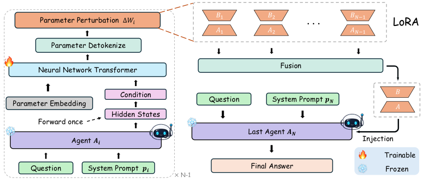
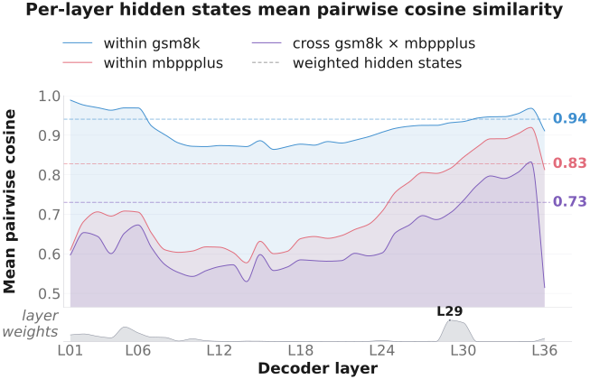
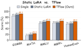
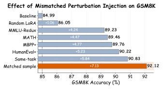

Multi-agent LLM systems commonly communicate through natural-language messages. While this interface is universal and human-readable, it forces each sender's intermediate computation to be decoded into tokens and then encoded again by the receiver, increasing generation cost, prefill overhead, and KV-cache memory.
We propose TFlow, a weight-space communication framework for a known and fixed receiver architecture. For each query, frozen role-prompted senders expose hidden-state trajectories, and a learned receiver-specific parameter generator maps these conditioning signals into layer- and module-specific LoRA factors. The resulting perturbations are fused, injected as a temporary forward patch, and discarded immediately after generation, enabling instance-level adaptation without permanent weight changes or additional textual context.

Given an input question, each sender performs one frozen forward pass and provides hidden states as conditioning signals. A trainable parameter generator initializes parameter tokens from these states, refines them with a structured Transformer, detokenizes them into LoRA factors, and fuses per-sender updates before transiently patching the receiver.
Accuracy (%) on full test splits using a shared frozen Qwen3-4B backbone. TFlow consistently improves over Single-Agent while cutting processed-token usage by 71-83% relative to TextMAS.
| Model | GSM8K | MATH | MMLU | HumanEval+ | MBPP+ |
|---|---|---|---|---|---|
| Single-Agent | 84.99 | 16.18 | 58.99 | 56.71 | 59.79 |
| TextMAS | 93.78 | 26.47 | 71.50 | 75.00 | 68.52 |
| TFlow | 92.12 | 23.16 | 66.97 | 65.24 | 67.20 |
The paper analyzes whether TFlow's conditioning signals and generated LoRA tensors are genuinely instance-dependent, rather than collapsing into static task adapters.
Learned layer aggregation does not simply select the most diverse hidden states. More than 80% of the mass concentrates on a small set of layers, while the aggregated conditioning vector preserves the semantic ordering between within-task and cross-task pairs.

Replacing TFlow's generator with a conventional LoRA adapter controls for trainable capacity. Static-LoRA improves over Single-Agent, but TFlow is substantially stronger, outperforming Static-LoRA by 4.29 points on average.

Mismatched perturbation injection fixes the receiver input but swaps in updates from random, cross-task, same-task, or matched samples. Cross-task updates help, same-task updates help more, and the matched perturbation performs best, confirming fine-grained input specificity.

conda create -n tflow python=3.10 -y
conda activate tflow
pip install -r requirements.txt
pip install -e .
python main.py --method tflow --dataset gsm8k
python infer.py --method tflow --question "Janet has 3 apples and buys 5 more. How many apples does she have?"@misc{bao2026goodagenticfriends,
title = {Good Agentic Friends Do Not Just Give Verbal Advice: They Can Update Your Weights},
author = {Bao, Wenrui and Wang, Huan and Wang, Jian and Wang, Zhangyang and Wang, Kai and Shang, Yuzhang},
year = {2026},
eprint = {2605.13839},
archivePrefix = {arXiv},
url = {https://arxiv.org/abs/2605.13839}
}